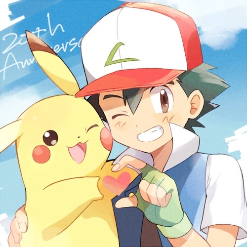

from Wikipedia
The Beginning Of Ash Ketchum's Adventure
 The series starts with Ash's tenth birthday, which according to Pokémon trainer registration bylaws allowed him to become a full-fledged Pokémon trainer and obtain a starter Pokémon. As a ten-year-old hailing from Pallet Town in the Kanto region, Ash was offered a choice between three Pokémon as his starter: Bulbasaur, Squirtle and Charmander. While he was planning to choose Squirtle, he received the electric type Pokémon Pikachu from Professor Oak instead, because he woke up late and all the other starter Pokémon had been taken by other trainers. After receiving Pikachu and a Pokédex, Ash left Pallet Town to start his journey. Since then Ash has traveled the world of Pokémon, competed in many challenges, and caught newer Pokémon. He has met many companions, such as Misty and Brock.